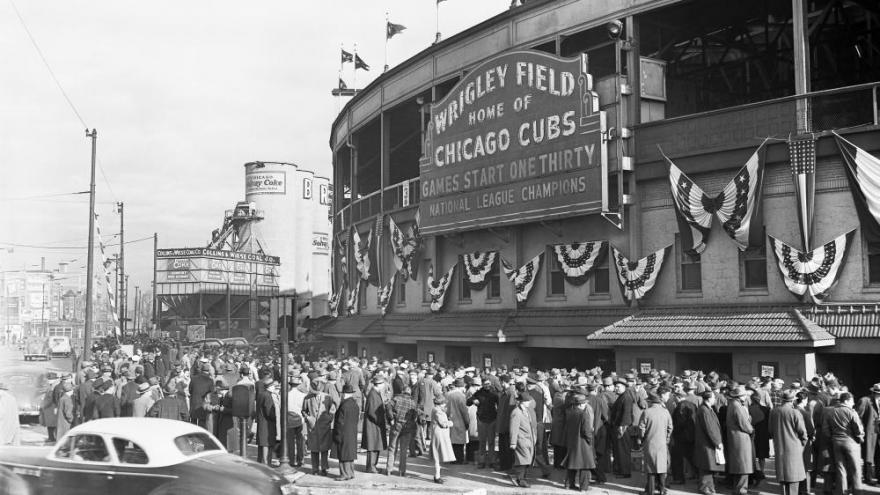
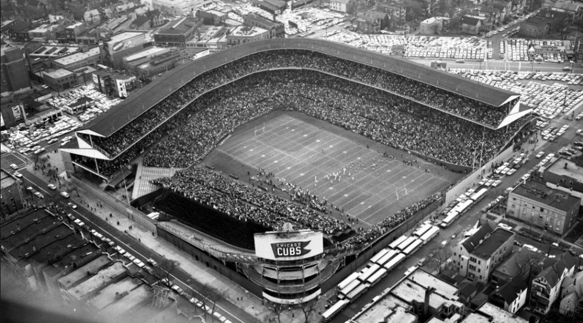
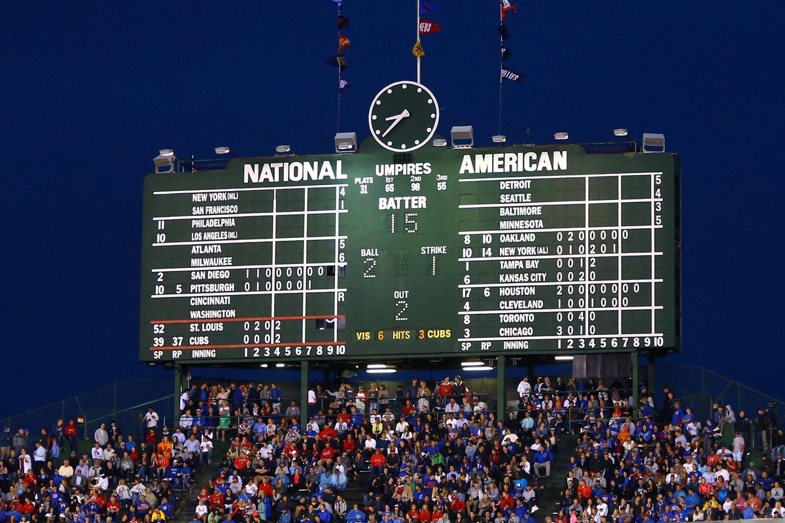

History
Baseball executive Charles Weeghman hired his architect Zachary Taylor Davis to design the park, which was ready for baseball by the home opener on April 23, 1914. The original tenants, the Chicago Whales (also called the Chi-Feds), came in second in the Federal League rankings in 1914, and won the league championship in 1915. In late 1915, Weeghman's Federal League folded. The resourceful Weeghman formed a syndicate including the chewing gum manufacturer William Wrigley Jr. to buy the Chicago Cubs from Charles P. Taft for about $500,000. Weeghman immediately moved the Cubs from the dilapidated West Side Grounds to his two-year-old park.
In 1918, Wrigley acquired the controlling interest in the club. In November 1926, he renamed the park Wrigley Field. In 1927, an upper deck was added, and in 1937, Bill Veeck, the son of the club president, planted ivy vines against the outfield walls after seeing the ivy planted at Perry Stadium, Indianapolis.
Usage
Wrigley Field's first tenant was the Federal League team, the Chicago Whales, from 1914 to 1915. It has served as the home baseball park for Major League Baseball's Chicago Cubs franchise since 1916.
The Chicago Bears of the National Football League played at Wrigley Field from 1921 to 1970 before relocating to Soldier Field. The team had transferred from Decatur, and retained the name "Staleys" for the 1921 season. They renamed themselves the Bears in order to identify with the baseball team, then a common practice in the NFL. Wrigley Field once held the record for the most NFL games played in a single stadium, with 365 regular season games, but this record was surpassed in 2003 by Giants Stadium in New Jersey, thanks to its dual-occupancy by the New York Giants and New York Jets. On September 14, 2003, the game played between the Jets and Miami Dolphins was the 366th regular season NFL game at Giants Stadium, breaking Wrigley's regular season record.[42] The 50 seasons the Bears spent at Wrigley Field had been an NFL record until 2006, when Lambeau Field duplicated this feat by hosting the Green Bay Packers for a 50th season and broke it in 2007. Soldier Field also matched the accomplishment when the Bears played there for their 50th season in 2021.
Wrigley Field has also hosted soccer games, the 2009 Winter Classic between the Chicago Blackhawks and Detroit Red Wings, and dozens of concerts.
Scoreboard
The scoreboard was installed in 1937, when Bill Veeck installed the new bleachers. It has remained in place ever since, and has only seen minor technical and cosmetic modifications. The clock was added in 1941, and a fifth row of scores was added to each side in 1961, with a sixth by 1969. A set of light stands facing onto the scoreboard was added in 1988 with the introduction of night games.
Along with Fenway Park's scoreboard and Minute Maid Park, Oakland-Alameda County Coliseum and Oracle Park's out of town scoreboards, Wrigley is one of the last parks to maintain a hand-turned scoreboard. A number turner watches the score changes on a computer (a ticker tape machine was used in the past), and updates the scoreboard by manually replacing the numbers from within the scoreboard. The scoreboard is made of sheet steel. The numbers that are placed into the inning windows are also steel, painted forest green, and numbered with white numerals. The box for the game playing at Wrigley uses yellow numerals for the current inning. The clock, which sits at the top center of the scoreboard, has never lost time in its 81-year existence.
Standing over the clock are three flagpoles, one for each division in the National League. There are 15 flags, one for each National League team, and their order on the flagpoles reflects the current standings. The entrance to the scoreboard is a trap-door on the bottom. On the reverse of the scoreboard, visible from the CTA elevated trains, is a blue Cubs pennant in white outlined in red neon. The scoreboard was extensively rehabilitated for the 2010 season.